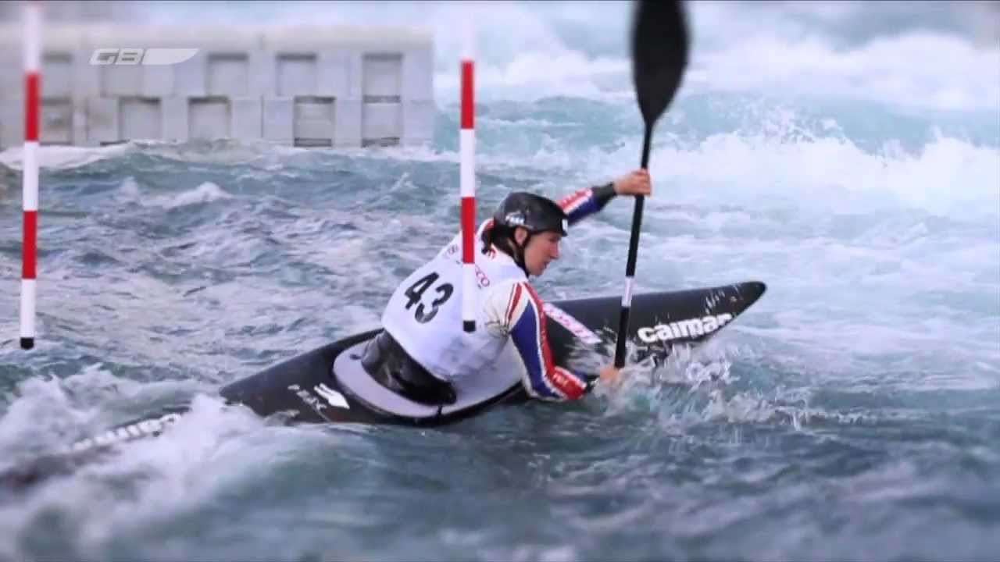

About Canoe Slalom

Canoe slalom is a highly competitive, adrenaline-pumping sport that involves racing
through a set course in a whitewater river. A single mistake can prove devastating,
with the tenths of seconds deciding the medals. Top athletes put in thousands of hours
of training year-round in all sorts of conditions, hoping to become the best.